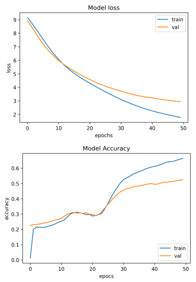
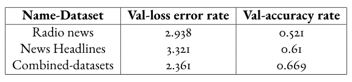
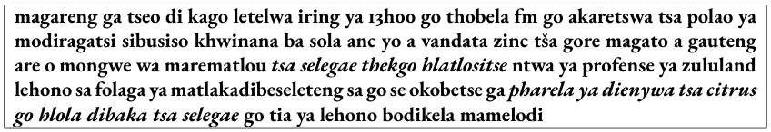
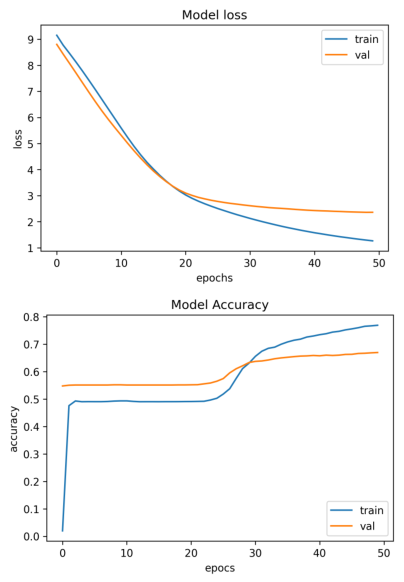

RAIL 2022Tafsiri ya mashine
Uchambuzi wa Korasi ya Habari za Redio yenye Msimbo Mseto wa Kisepedi-Kiingereza
Tafsiri ya mashine, haijakaguliwa na binadamu. Makala asili ndiyo toleo la rejeo; sentensi zilizopigiwa mstari ni zile ambazo ukaguzi wa kiotomatiki haukuwa na uhakika nazo.
Proceedings of the 3rd Workshop on Resources for African Indigenous Languages (RAIL 2022), Journal of the Digital Humanities Association of Southern Africa.
Tafsiri ya Ernst van Gassen (Arktos AI Lab), yenye leseni CC BY-SA 4.0 kama makala asili. Matumizi tena yanaruhusiwa kwa kutaja mwandishi; shiriki marekebisho kwa masharti yale yale. Waandishi asili hawajakagua wala kuidhinisha tafsiri hii.
Maandishi matupu ya kutumia tena, pamoja na leseni yake: Kiswahili · LESENI
Taasisi
Ramalepe, Simon
Computer
Science
Department
University
of
Limpopo, Sovenga, 0727, South Africa.
Modipa, Thipe I.
Computer
Science
Department
University
of
Limpopo, Sovenga, 0727, South Africa.
Centre for Artificial Intelligence Research (CAIR)
South Africa.
Davel, Marelie H.
Faculty of Engineering, North-West University
Potchefstroom, South Africa
Centre for Artificial Intelligence Research (CAIR)
South Africa.
Anwani za barua pepe zimeondolewa kwa sababu za faragha. Zinapatikana katika PDF asilia.
Muhtasari
Msimbo mseto ni jambo linalotokea hasa katika nchi zenye lugha nyingi ambapo wazungumzaji wa lugha nyingi mara nyingi hubadilisha lugha katika mazungumzo yao. Kutopatikana kwa korasi kubwa za msimbo mseto kunakwamisha uundaji na mafunzo ya miundo ya lugha kwa ajili ya uzalishaji wa maandishi yenye msimbo mseto. Katika utafiti huu, tunachunguza awamu ya awali ya kukusanya na kuunda korasi ya msimbo mseto wa Kisepedi-Kiingereza kwa ajili ya kuzalisha habari sintetiki. Habari za redio na marudio ya msimbo mseto kwenye habari zilizosomwa zilizingatiwa na kuchambuliwa. Tuliunda na kufunza muundo wa lugha unaotegemea Transformer kwa kutumia seti ya data ya msimbo mseto iliyokusanywa. Tuliona kwamba marudio ya data ya msimbo mseto katika seti ya data yalikuwa chini sana kwa asilimia 1.1. Tulikamilisha seti yetu ya data kwa seti ya data ya vichwa vya habari ili kuunda seti mpya ya data. Ingawa marudio bado yalikuwa chini, modeli ilipata kiwango bora cha upotevu cha 2,361 kwa Usahihi wa 66%.
Maneno Muhimu
Kubadili msimbo, uzalishaji wa maandishi, habari za redio, Transformer, Sepedi
1 Utangulizi
Kubadili msimbo ni matumizi ya lugha zaidi ya moja ndani ya sentensi katika mazungumzo. Kwa ujumla huenea zaidi katika jamii za lugha nyingi kupitia usemi kuliko maandishi (Gupta et al. 2020). Hata hivyo, mwelekeo wa sasa wa mawasiliano kupitia teknolojia unahusisha maandishi, na unajitokeza zaidi kwenye mitandao ya kijamii. Kama ilivyo katika nchi nyingi zenye lugha nyingi, Waafrika Kusini, hasa wazungumzaji wa Sepedi hutumia kubadili msimbo katika mazungumzo yao. Kubadili msimbo kwa ujumla kunagawanywa katika ubadilishaji baina ya sentensi na ndani ya sentensi. Kubadili msimbo baina ya sentensi hutokea katika kiwango cha sentensi wakati mzungumzaji anapobadilisha lugha kutoka sentensi moja hadi nyingine, huku kubadili ndani ya sentensi hutokea katika kiwango cha neno wakati lugha zaidi ya moja inapotumika katika sentensi (Hamed et al. 2017). Lugha ya msingi katika mazingira ya ubadilishaji msimbo hujulikana kwa kawaida kama lugha matriki huku lugha ya pili ikijulikana kama lugha iliyopachikwa (Hamed et al. 2017).
Aina nyingine ya ubadilishaji msimbo wa ndani ya sentensi hutumia maneno yaliyokopwa au ya mkopo (Chan et al. 2005). Maneno yaliyokopwa au ya mkopo hutokea katika hali ambapo vokali au konsonanti huongezwa au kubadilishwa ili kuzalisha maneno yanayokubalika kifonetiki katika lugha matriki. Tofauti kati ya ubadilishaji msimbo, uchanganyaji msimbo, na ukopaji ni ngumu kwa hiyo, katika utafiti huu tutatumia ubadilishaji msimbo kurejelea ubadilishaji msimbo wa kati ya sentensi na wa ndani ya sentensi.
Tafiti zimeonyesha kwamba kuna uchache au ukosefu wa data ya maandishi yenye ubadilishaji msimbo (Chang et al. 2018, Gao et al. 2019, Gupta et al. 2020). Hii inaweza kuwa matokeo ya asili isiyo rasmi ya data yenye ubadilishaji msimbo. Kwa maneno mengine, ubadilishaji msimbo kwa kawaida hutokea katika mazingira yasiyo rasmi au ya kijamii aidha katika usemi au maandishi. Kwa hiyo, kuna ukosefu wa seti za data zilizoandikwa kuhusu data yenye ubadilishaji msimbo. Uundaji wa korasi yenye mchanganyiko wa msimbo iliyozalishwa kisanisi ambayo inaweza kutumika kufunza miundo ya lugha kwa ajili ya uzalishaji wa maandishi umependekezwa. Hata hivyo, maandishi yanayozalishwa si halisi na yanapaswa kujaribiwa ikiwa yanafanana na hali halisi ya mchanganyiko wa msimbo. Ukosefu wa korasi kubwa zilizopo za mchanganyiko wa msimbo ni changamoto kwa uundaji wa miundo ya lugha ya uzalishaji wa maandishi yenye mchanganyiko wa msimbo, hasa kwa lugha zenye rasilimali chache kama vile Sepedi.
Sepedi ni mojawapo ya lugha rasmi za Afrika Kusini na imeainishwa kama lugha yenye rasilimali chache. Kwa sasa, korasi za mchanganyiko wa msimbo zinazopatikana kwa jozi ya lugha ya Sepedi-Kiingereza hazitoshi kwa matumizi ya mbinu za Ujifunzajikina. Katika utafiti huu, tunajadili na kuchambua mchakato wa awali wa kukusanya data ya maandishi yenye mchanganyiko wa msimbo wa Sepedi-Kiingereza kwa ajili ya uundaji wa miundo yenye mchanganyiko wa msimbo kwa jozi hii ya lugha. Korasi iliyokusanywa kisha inatumika kwa muundo wa lugha wa uzalishaji wa maandishi ili kuangalia utendaji wa muundo huo kwa kutumia data ya maandishi yenye mchanganyiko wa msimbo isiyozalishwa kisanisi.
Makala imeundwa kama ifuatavyo: Sehemu ya 2 inajadili usuli wa utafiti. Sehemu ya 3 inajadili seti za data zilizotumika kufunza modeli ya uzalishaji wa maandishi. Katika Sehemu ya 4 tunajadili majaribio yaliyofanywa, huku katika Sehemu ya 5 tunazingatia matokeo yaliyopatikana na tathmini ya modeli hiyo. Maelezo ya kuhitimisha na kazi ya baadaye yanawasilishwa katika Sehemu ya 6.
2 Usuli
Lugha ya Sepedi inazungumzwa hasa katika jimbo la Limpopo nchini Afrika Kusini ikiwa na idadi ya watu milioni 5.9 (Statistics South Africa 2022). Ni lugha msingi katika mazungumzo mengi ya kawaida katika jimbo hilo huku Kiingereza na Lugha nyingine za Afrika Kusini zikipachikwa katika mazungumzo hayo. Ubadilishaji msimbo si jambo la kawaida katika usemi wa kusomwa au maandishi lakini hutokea mara nyingi katika mazungumzo ya kawaida jambo ambalo hufanya iwe vigumu kukusanya data yenye ubadilishaji msimbo kwa ajili ya kufunza na kupima modeli za lugha. Unapotokea, huwa ni kwa ajili ya kusisitiza katika mazingira ya lugha nyingi. Majaribio ya kukusanya korasi za usemi zenye ubadilishaji msimbo yamefanywa. Hamed et al. (2018), walikusanya data ya mazungumzo ya hiari ya Kiarabu cha Misri-Kiingereza yenye ubadilishaji msimbo kwa kuendesha na kurekodi mazungumzo ya mahojiano yasiyo rasmi. Uchambuzi wa data yao ulionyesha kuwa kulikuwa na matumizi makubwa ya mchanganyiko msimbo (ndani ya sentensi). Kati ya sentensi 1,234 katika seti yao ya data, sentensi 985 (79.8%) zilikuwa na mchanganyiko msimbo, sentensi 124 (10%) zilikuwa maandishi ya lugha moja ya Kiarabu na sentensi 125 (10.1%) zilikuwa maandishi ya lugha moja ya Kiingereza. Maneno vichochezi yaliyotangulia mara nyingi zaidi kabla ya hatua ya kubadili msimbo pia yalibainishwa pamoja na uni-gramu, bi-gramu, na tri-gramu zilizojitokeza mara nyingi zaidi. Uwekaji tagi wa aina za maneno (POS) ulifanywa kwa sehemu ya data na ilibainika kuwa nomino hutumika zaidi katika lugha iliyopachikwa.
Katika utafiti mwingine, Chan et al. (2005) walitengeneza korasi ya usemi ya mchanganyiko msimbo ya Kikantoni-Kiingereza ili kuchunguza athari ya lafudhi ya Kikantoni katika Kiingereza. Hali ambapo maneno mengi ya Kiingereza yana lafudhi ya Kikantoni. Kwa ukusanyaji wa data, vikundi vya habari na mbinu za shajara za mtandaoni zilitumika. Marudio ya maneno yaliyobadilishwa msimbo, uwekaji tagi wa aina za maneno wa maneno mchanganyiko wa msimbo, na urefu wa maandishi yaliyobadilishwa msimbo yalibainishwa. Kama ilivyo katika Hamed et al. (2017), marudio ya utokeaji wa nomino yalikuwa juu kwa 62.3% na maneno yenye urefu wa 1 yalikuwa 74.96% Lyu et al. (2015) pia, walitengeneza Korasi ya Hotuba ya Kubadilisha Msimbo ya Kimandarini-Kiingereza. Korasi yao ilitawaliwa na ubadilishaji msimbo wa ndani ya sentensi wa lugha msingi. Mbinu ya ukusanyaji wa data pia ilijumuisha mahojiano na mazungumzo yaliyorekodiwa. Maneno yanayotumiwa mara nyingi zaidi pia yalitambuliwa.
Modipa et al. (2013), walitengeneza korasi ya usemi iliyobadilishwa msimbo ya Kisepedi-Kiingereza ili kuchanganua vipengele vya athari za ubadilishaji msimbo wakati wa kutengeneza mifumo ya utambuzi wa usemi wa kiotomatiki (ASR) inayoweza kushughulikia usemi uliobadilishwa msimbo wa Kisepedi-Kiingereza. Katika mbinu yao ya ukusanyaji wa data, matangazo ya redio yalirekodiwa na idadi ya matukio yaliyobadilishwa msimbo ilihesabiwa na kunakiliwa ili kuunda korasi ya Kisepedi iliyochochewa ya ubadilishaji msimbo (SPCS) (Modipa & Davel 2022).
Jedwali la 1: Idadi ya sentensi, maneno na tokeni za kipekee katika seti za data.

Jedwali la 2: Maneno 10 ya Kiingereza na yaliyokopwa yanayotokea mara nyingi zaidi katika seti ya data.

Ingawa SPCS ni ndogo (ina vishazi vifupi vilivyobadilishwa msimbo), inatoa msingi wa korasi iliyobadilishwa msimbo kwa jozi ya lugha ya Sepedi-Kiingereza. Marivate et al. (2020) waliunda korasi ya vichwa vya habari vya Sepedi kutoka kwa ukurasa wa Facebook wa habari za redio ya kitaifa. Data ilitumika kutengeneza modeli ya uainishaji wa habari.
Van Der Westhuizen & Niesler (2016) walikusanya korasi ya usemi iliyobadilishwa msimbo ya Kiingereza-isiZulu ya papo hapo kutoka kwa tamthilia za Afrika Kusini. Data ilinakiliwa kwa mkono na maandishi ya Kiingereza ya lugha moja yalitawala korasi kwa asilimia 75. Data ilifafanuliwa na mipaka ya ubadilishaji msimbo ilitambuliwa. Korasi ya lugha nyingi iliyobadilishwa msimbo kwa Kiingereza-isiZulu, Kiingereza-isiXhosa, Kiingereza-Setswana, na Kiingereza-Sesotho imetengenezwa (Van Der Westhuizen & Niesler 2018). Ukusanyaji wa data kwa ajili ya korasi hii ya lugha nyingi yenye mchanganyiko wa msimbo ulipatikana kutoka kwa rekodi za video za kidijitali za vipindi 626 vya opera ya sabuni ya Afrika Kusini. Data ilinakiliwa kwa mikono na wazungumzaji wenye ufasaha wa lugha mbili wa jozi za lugha. Maneno ya vichochezi vya mchanganyiko wa msimbo zaidi yalitambuliwa katika kila moja ya jozi za lugha.
Katika utafiti mwingine, Jansen van Vueren & Niesler (2021) walitumia Ujalizaji data kufunza na kutathmini utendaji wa miundo ya lugha yenye mchanganyiko wa msimbo. Kumbukumbu fupi ya muda mrefu (LSTM) ilitumika kama modeli zalishi kutengeneza kwa njia ya sintetiki data yenye mchanganyiko wa msimbo ili kuongeza seti ndogo za data zenye mchanganyiko wa msimbo. Utafiti unabaini kuwa miundo iliyoboreshwa inaweza kuzalisha maandishi yenye perplexity iliyoboreshwa na kiwango cha makosa ya maneno ikilinganishwa na miundo isiyo na uboreshaji wa data iliyochunguzwa katika (Van Der Westhuizen & Niesler 2016).
3 Ukusanyaji wa Data
Seti za data za habari za redio ya Sepedi na vichwa vya habari vinatumika katika utafiti huu kwa ajili ya uundaji wa miundo na uchambuzi. Seti ya data ya habari za redio ya Sepedi ndiyo seti ya data msingi kwa utafiti huu. Data ilikusanywa kutoka kituo cha redio cha jamii kilichopo Limpopo ili kuunda korasi yenye mchanganyiko wa lugha. Vipindi kadhaa vya utangazaji vinawasilishwa kila siku, na ukusanyaji wa data ulilenga habari za redio zilizosomwa wakati mbalimbali wa siku kati ya Juni na Agosti 2022. Usafishaji wa data ulifanyika ili kusawazisha data. Tulitumia seti ya data kufunza modeli ya uzalishaji wa maandishi iliyotengenezwa kwa msingi wa Transformer na tukaangalia Usahihi wake wakati wa kuzalisha habari sintetiki.
Jedwali la 1, linaonyesha ukubwa wa seti za data kwa mgawanyo wa 70% kwa mafunzo, 20% kwa uthibitishaji, na 10% kwa majaribio". Seti ya data ya vichwa vya habari Marivate et al. (2020) ilitumika kwa kulinganisha na seti ya data ya habari za redio ya Sepedi. Seti ya data ni ndogo kiasi ikiwa na sentensi 1 182 zenye mchanganyiko mdogo wa lugha.
Jedwali la 2, linaonyesha maneno 10 ya juu ya Kiingereza na yaliyokopwa katika seti ya data ya habari za redio ya Sepedi. Jumla ya idadi ya tokeni za kipekee za Kiingereza ni 136 ambayo inachangia asilimia 8.8 tu ya jumla ya tokeni za kipekee katika seti ya data. Ni asilimia 9 tu ya tokeni za kipekee za Kiingereza zina marudio ya 10 na zaidi. Wastani wa idadi ya maneno kwa kila sentensi katika seti ya data iliyounganishwa ni 18.2. Tulichukua sampuli nasibu ya sentensi 30 katika seti ya data ya habari za redio na kugundua kwamba nomino za Kiingereza na nomino maalum zilitawala aina ya ubadilishaji msimbo katika seti ya data pamoja na matumizi ya maneno ya mkopo kama inavyoonekana katika Jedwali la 2. Idadi ya maneno ya Kiingereza ilikuwa 31 kati ya maneno 929 katika data ya sampuli. Hii inatafsiriwa kuwa marudio ya chini ya ubadilishaji msimbo ya asilimia 3.3 tu na uwiano wa neno 1 tu la Kiingereza kwa kila sentensi. Uchambuzi zaidi wa seti ya data unaonyesha hakuna ubadilishaji msimbo baina ya sentensi.

Kielelezo cha 1: Marudio ya maneno katika seti ya data ya mafunzo
Uonyeshaji wa data katika seti zote za data unaonyesha kwamba bi-gramu (kiwango cha herufi) zina marudio ya juu. Kielelezo 1 kinaonyesha marudio 10 ya juu ya maneno katika seti ya data ya habari za redio ya Sepedi. Mhimili wa y unaonyesha marudio ya kila neno katika seti ya data huku mhimili wa x unaonyesha maneno katika msamiati yaliyopangwa kutoka yale yenye marudio mengi hadi machache.
4 Mpangilio wa Majaribio
Kwa kulinganisha na utafiti wa awali wa Ramalepe et al. (2022) kuhusu data ya lugha moja, tulitumia mbinu ileile waliyotumia kutengeneza modeli inayotegemea Transformer. Modeli iliyotengenezwa ina kitala kimoja cha Transformer chenye ufichaji wa kisababishi kwenye tabaka za umakini, tabaka mbili tofauti za upachikaji kwa tokeni na faharasa ya tokeni yenye tabaka moja mnene lenye vichwa 2 vya umakini. Tulitumia ukubwa wa upachikaji wa 64 kwa uchangamano wa modeli na kiwango chaguo-msingi cha kuacha cha 0.1. Adam alitumika kama kiboreshaji cha modeli na kitengo cha mstari kilichorekebishwa (ReLU) kama kitendakazi cha uamilishaji. Ukubwa wa msamiati uliwekwa 3k (karibu jumla ya idadi ya tokeni za kipekee katika seti ya data iliyounganishwa). Seti zote mbili za data zinaunganishwa ili kuona kama kuna uboreshaji katika utendaji wa modeli kadri ukubwa wa data unavyoongezeka. Modeli ilifunzwa kwa epochs 50 kutokana na kiasi kidogo cha data katika seti ya data.

Kielelezo 2: Mviringo wa hasara na Usahihi kwa seti ya data ya habari za Redio

Kielelezo 3: Mviringo wa hasara na Usahihi kwa seti ya data ya vichwa vya Habari
Usahihi wa modeli ulipimwa kwa kukokotoa jumla ya idadi ya utabiri sahihi kama asilimia ya jumla ya idadi ya utabiri wakati wa mafunzo kwa kutumia kipimo cha kazi cha SparseCategoricalAccuracy ambacho hutumiwa zaidi wakati wa kufanya utabiri wa maandishi kwa shabaha chache katika Ujifunzajikina. Kipimo cha SparseCategoricalAccuracy huangalia kama thamani ya juu zaidi ya kweli ni sawa na faharasa ya thamani ya juu zaidi iliyotabiriwa.
5 Matokeo na Uchambuzi
Kielelezo 2 kinaonyesha mviringo wa hasara na Usahihi katika kila epoch ya mchakato wa mafunzo kwa seti ya data ya habari za redio ya Sepedi, huku Kielelezo 3 kinaonyesha mviringo wa hasara na Usahihi wa seti ya data ya vichwa vya habari. Mviringo wa hasara na Usahihi kwa seti ya data iliyounganishwa unaonyeshwa katika Kielelezo 4. Kiwango bora cha upotevu wa modeli kilikuwa 2.361 kilichopatikana kwa seti ya data iliyounganishwa kwa Usahihi wa 66%. Tuliona kwamba ingawa Usahihi bora uliopatikana ulikuwa uboreshaji kutoka 50.3% uliopatikana katika Moila & Modipa (2020) kwa kutumia mbinu inayotegemea LSTM kwenye data ya lugha moja, bado ulikuwa mdogo ikilinganishwa na Usahihi wa 75% uliopatikana katika Ramalepe et al. (2022) kwa kutumia mbinu inayotegemea Transformer. Jedwali la 3 linaonyesha muhtasari wa matokeo. Inazingatiwa zaidi kwamba ukubwa wa seti ya data huathiri Usahihi wa modeli. Wakati modeli ilipofunzwa kwa seti ya data ya habari za redio ya Sepedi (seti ndogo zaidi ya data), Usahihi uliopatikana ulikuwa mdogo, uliongezeka kadiri tulivyoongeza data katika seti ya data.
Katika vielelezo vyote, Kielelezo 2, Kielelezo 3, na Kielelezo 4 seti ya uthibitishaji ilitatizika kujumlisha, ikionyesha dalili ya Ujifunzaji banifu. Hii inatokana kwa kiasi kikubwa na kiasi kidogo cha data tulichokuwa nacho katika seti zote za data. Ili kuzalisha maandishi tunaanza kwa kulisha modeli kwa Kidokezo cha kuanzia, kisha modeli huzalisha usambazaji wa uwezekano wa masharti juu ya maneno ya pembejeo na kuchukua sampuli ya neno linalofuata kutoka kwa uwezekano wa masharti. Seti mpya ya maneno kisha inakuwa ingizo jipya kwa modeli, mchakato unaendelea hadi urefu wa juu wa mfuatano ufikiwe. Ili kuangalia utendaji wa modeli kwenye data yenye mchanganyiko wa lugha, tuliipa modeli maandishi ya ingizo na modeli ikazalisha maandishi katika Jedwali la 4. Kutoka kwa maandishi yaliyozalishwa, inaweza kuonekana kwamba ingawa sentensi ni sahihi kisarufi, baadhi si sahihi kimaana na hazina mpangilio mzuri wa maneno (zimeandikwa kwa italiki katika maandishi yaliyozalishwa). Kwa mfano, kishazi "tsa selegae thekgo hlatlositse " (cha ongezeko la usaidizi wa ndani) kinaweza kusahihishwa kuwa "hlatlositse thekgo ya tsa selegae" (usaidizi wa ndani ulioongezeka). Idadi ya maneno ya Kiingereza katika seti zote za data ilikuwa ndogo sana, hivyo maneno hayo hayakuathiri Usahihi wa modeli na maandishi yaliyozalishwa. Hata hivyo, utendaji wa modeli ni wa chini kwa 12% kutoka kwa 75% iliyopatikana katika Ramalepe et al. (2022)
Jedwali la 3: Kiwango cha hasara ya uthibitishaji na Usahihi kwa kila seti ya data

Jedwali la 4: Maandishi yaliyozalishwa


Kielelezo 4: mkondo wa hasara na Usahihi: seti ya data iliyounganishwa.
Ingawa marudio ya maneno yaliyobadilishwa msimbo katika seti za data yalikuwa ya chini sana, modeli iliweza angalau kuzalisha neno moja lililobadilishwa msimbo. Kwa mfano "pharela ya dienywa tsa citrus go hlola dibaka tsa selegae" (Kikwazo cha matunda ya machungwa kuunda fursa za kienyeji). Matokeo yanaashiria hisia chanya ya mafanikio kuelekea uundaji wa seti ya data kubwa iliyobadilishwa msimbo ili kufunza modeli kubwa zaidi. Changamoto moja kuu ambayo bado inapaswa kuangaliwa ni kutafuta njia zinazowezekana za kupata data iliyobadilishwa msimbo ya moja kwa moja ikilinganishwa na maandishi yaliyosomwa. Hata hivyo, data kama hiyo mara nyingi ni ya kuchosha kutokana na unukuzi wa kiasi kikubwa cha maandishi ya usemi.
6 Hitimisho
Katika utafiti huu, tulijadili awamu ya awali ya kukusanya, kuendeleza, na kuchambua korasi iliyobadilishwa msimbo kwa kutumia habari za redio ya Sepedi. Korasi iliyoendelezwa ya habari za redio ya Sepedi ilitumiwa kufunza modeli ya uzalishaji wa maandishi yenye msingi wa Transformer ili kuangalia utendaji wake kwenye data iliyobadilishwa msimbo. Mfano ulipata Usahihi bora wa 66% kwa seti ya data iliyounganishwa. Ujalizaji data unaweza kuzingatiwa katika siku zijazo ili kujaliza maandishi na kuunda seti mpya ya data yenye mchanganyiko wa msimbo. Njia nyingine za kukusanya data ya hiari yenye mchanganyiko wa msimbo kupitia rekodi za moja kwa moja na unukuzi zinaweza pia kuzingatiwa katika siku zijazo. Ili kuthibitisha ubora wa maandishi yaliyozalishwa, watathmini binadamu wanaweza pia kuzingatiwa kama sehemu ya kazi ya baadaye.
Shukrani
Kazi hii inaungwa mkono na Centre for Artificial Intelligence Research na Telkom Centre of Excellence katika University of Limpopo.
Marejeo
Chan, J. Y. C., Ching, P. C. & Lee, T. (2005), Development of a Cantonese-English Code-mixing Speech Corpus, in 'Ninth European conference on speech communication and technology.'.
Chang, C.-T., Chuang, S.-P. & Lee, H.-Y. (2018), Code-switching Sentence Generation by Generative Adversarial Networks and its Application to Data Augmentation, in 'arXiv preprint arXiv:1811.02356.'.
Gao, Y., Feng, J., Liu, Y., Hou, L., Pan, X. & Ma, Y. (2019), Code-switching sentence generation by BERT and generative adversarial networks, in 'In INTERSPEECH', Vol. 2019-September, International Speech Communication Association, pp. 3525-3529.
Gupta, D., Ekbal, A. & Bhattacharyya, P. (2020), Findings of the Association for Computational Linguistics A Semi-supervised Approach to Generate the Code-Mixed Text using Pre-trained Encoder and Transfer Learning, in 'In Proceedings of the 2020 Conference on Empirical Methods in Natural Language Processing:', pp. 2267-2280.
Hamed, I., Elmahdy, M. & Abdennadher, S. (2017), Building a First Language Model for Code-switch Arabic-English, in 'Procedia Computer Science', Vol. 117, Elsevier B.V., pp. 208-216.
Hamed, I., Elmahdy, M., Abdennadher, S., Tagamoa, E. & Khames, E. (2018), Collection and Analysis of Code-switch Egyptian Arabic-English Speech Corpus, in 'Proceedings of the Eleventh International Conference on Language Resources and Evaluation (LREC 2018).', pp. 3805-3809.
Jansen van Vueren, J. & Niesler, T. (2021), Optimised Code-Switched Language Model Data Augmentation in Four Under-Resourced South African Languages, in 'Lecture Notes in Computer Science (including subseries Lecture Notes in Artificial Intelligence and Lecture Notes in Bioinformatics)', Vol. 12997 LNAI, Springer Science and Business Media Deutschland GmbH, pp. 303-316.
Lyu, D. C., Tan, T. P., Chng, E. S. & Li, H. (2015), 'Mandarin-English code-switching speech corpus in South-East Asia: SEAME', Language Resources and Evaluation 49(3), 581-600.
Marivate, V., Sefara, T., Chabalala, V., Makhaya, K., Mokgonyane, T., Mokoena, R. & Modupe, A. (2020), 'Investigating an approach for low resource language dataset creation, curation and classification: Setswana and Sepedi'.
Modipa, T. I. & Davel, M. H. (2022), 'Two sepedi-english code-switched speech corpora', Language Resources and Evaluation 56(3), 703-727.
Modipa, T. I., Davel, M. H. & de Wet, F. (2013), Implications of Sepedi/English code switching for ASR systems, in 'In Proceedings of the Twenty-Fourth Annual Symposium of the Pattern Recognition Association of South Africa (PRASA 2013)', Johannesburg, South Africa.
Moila, M. M. & Modipa, T. I. (2020), The development of a sepedi text generation model using long-short term memory, in 'Proceedings of the 2nd International Conference on Intelligent and Innovative Computing Applications', ACM, New York, NY, USA, pp. 1-5.
Ramalepe, P. S., Modipa, T. I. & Davel, H. M. (2022), The Development of a Sepedi Text Generation Model Using Transformers [Paper presentation], in 'SATNAC-2022', George, Western Cape, pp. 51-56. URL: https://www.satnac.org.za/proceedings
Statistics South Africa (2022), Mid-year population estimates 2022, Technical report. URL: www.statssa.gov.za,,Tel+27123108911
Van Der Westhuizen, E. & Niesler, T. (2016), Automatic Speech Recognition of English-isiZulu Code-switched Speech from South African Soap Operas, Technical report.
Van Der Westhuizen, E. & Niesler, T. (2018), A First South African Corpus of Multilingual Code-switched Soap Opera Speech, in 'Proceedings of the Eleventh International Conference on Language Resources and Evaluation (LREC 2018).'.
English na Kiswahili
The Analysis of the Sepedi-English Code-switched Radio News Corpus
Uchambuzi wa Korasi ya Habari za Redio yenye Msimbo Mseto wa Kisepedi-Kiingereza
Affiliations
Ramalepe, Simon
Computer
Science
Department,
University
of
Limpopo, Sovenga, 0727, South Africa.
Modipa, Thipe I.
Computer
Science
Department,
University
of
Limpopo, Sovenga, 0727, South Africa.
Centre for Artificial Intelligence Research (CAIR),
South Africa.
Davel, Marelie H.
Faculty of Engineering, North-West University,
Potchefstroom, South Africa
Centre for Artificial Intelligence Research (CAIR),
South Africa.
Taasisi
Ramalepe, Simon
Computer
Science
Department,
University
of
Limpopo, Sovenga, 0727, South Africa.
Modipa, Thipe I.
Computer
Science
Department,
University
of
Limpopo, Sovenga, 0727, South Africa.
Centre for Artificial Intelligence Research (CAIR),
South Africa.
Davel, Marelie H.
Faculty of Engineering, North-West University,
Potchefstroom, South Africa
Centre for Artificial Intelligence Research (CAIR),
South Africa.
Abstract
Muhtasari
Code-switching is a phenomenon that occurs mostly in multilingual countries where multilingual speakers often switch between languages in their conversations. The unavailability of large-scale code-switched corpora hampers the development and training of language models for the generation of code-switched text. In this study, we explore the initial phase of collecting and creating Sepedi-English code-switched corpus for generating synthetic news. Radio news and the frequency of code-switching on read news were considered and analysed. We developed and trained a Transformer-based language model using the collected code-switched dataset. We observed that the frequency of code-switched data in the dataset was very low at 1.1%. We complemented our dataset with the news headlines dataset to create a new dataset. Although the frequency was still low, the model obtained the optimal loss rate of 2,361 with an accuracy of 66%.
Msimbo mseto ni jambo linalotokea hasa katika nchi zenye lugha nyingi ambapo wazungumzaji wa lugha nyingi mara nyingi hubadilisha lugha katika mazungumzo yao. Kutopatikana kwa korasi kubwa za msimbo mseto kunakwamisha uundaji na mafunzo ya miundo ya lugha kwa ajili ya uzalishaji wa maandishi yenye msimbo mseto. Katika utafiti huu, tunachunguza awamu ya awali ya kukusanya na kuunda korasi ya msimbo mseto wa Kisepedi-Kiingereza kwa ajili ya kuzalisha habari sintetiki. Habari za redio na marudio ya msimbo mseto kwenye habari zilizosomwa zilizingatiwa na kuchambuliwa. Tuliunda na kufunza muundo wa lugha unaotegemea Transformer kwa kutumia seti ya data ya msimbo mseto iliyokusanywa. Tuliona kwamba marudio ya data ya msimbo mseto katika seti ya data yalikuwa chini sana kwa asilimia 1.1. Tulikamilisha seti yetu ya data kwa seti ya data ya vichwa vya habari ili kuunda seti mpya ya data. Ingawa marudio bado yalikuwa chini, modeli ilipata kiwango bora cha upotevu cha 2,361 kwa Usahihi wa 66%.
Keywords
Maneno Muhimu
Code-switching, text generation, radio news, Transformers, Sepedi
Kubadili msimbo, uzalishaji wa maandishi, habari za redio, Transformer, Sepedi
1 Introduction
1 Utangulizi
Code-switching is the use of more than one language within a sentence in a discourse. It is generally more prevalent in multilingual communities through speech than text (Gupta et al. 2020). However, the current trend of communication through technology involves text, and it is more eminent on social media. Like in most multilingual countries, South Africans, notably Sepedi speakers use code-switching in their conversations. Code-switching is generally categorised into inter-sentential and intra-sentential switching. Inter-sentential code-switching occurs on a sentence level when a speaker switches languages from one sentence to another while intra-sentential occurs on a word level when more than one language is used in a sentence (Hamed et al. 2017). The primary language in a code-switching environment is commonly known as the matrix language while secondary language is known as the embedded language (Hamed et al. 2017).
Kubadili msimbo ni matumizi ya lugha zaidi ya moja ndani ya sentensi katika mazungumzo. Kwa ujumla huenea zaidi katika jamii za lugha nyingi kupitia usemi kuliko maandishi (Gupta et al. 2020). Hata hivyo, mwelekeo wa sasa wa mawasiliano kupitia teknolojia unahusisha maandishi, na unajitokeza zaidi kwenye mitandao ya kijamii. Kama ilivyo katika nchi nyingi zenye lugha nyingi, Waafrika Kusini, hasa wazungumzaji wa Sepedi hutumia kubadili msimbo katika mazungumzo yao. Kubadili msimbo kwa ujumla kunagawanywa katika ubadilishaji baina ya sentensi na ndani ya sentensi. Kubadili msimbo baina ya sentensi hutokea katika kiwango cha sentensi wakati mzungumzaji anapobadilisha lugha kutoka sentensi moja hadi nyingine, huku kubadili ndani ya sentensi hutokea katika kiwango cha neno wakati lugha zaidi ya moja inapotumika katika sentensi (Hamed et al. 2017). Lugha ya msingi katika mazingira ya ubadilishaji msimbo hujulikana kwa kawaida kama lugha matriki huku lugha ya pili ikijulikana kama lugha iliyopachikwa (Hamed et al. 2017).
Another form of intra-sentential code-switching uses borrowed or loanwords (Chan et al. 2005). Borrowed or loaned words occur in situations where vowels or consonants are either added or replaced to reproduce phonetically accepted words in the matrix language. The distinction between code-switching, code-mixing, and borrowing is difficult hence, in this study we will use code-switching to refer to both inter and intra-sentential code-switching.
Aina nyingine ya ubadilishaji msimbo wa ndani ya sentensi hutumia maneno yaliyokopwa au ya mkopo (Chan et al. 2005). Maneno yaliyokopwa au ya mkopo hutokea katika hali ambapo vokali au konsonanti huongezwa au kubadilishwa ili kuzalisha maneno yanayokubalika kifonetiki katika lugha matriki. Tofauti kati ya ubadilishaji msimbo, uchanganyaji msimbo, na ukopaji ni ngumu kwa hiyo, katika utafiti huu tutatumia ubadilishaji msimbo kurejelea ubadilishaji msimbo wa kati ya sentensi na wa ndani ya sentensi.
Studies have shown that there is sparsity or lack of code-switched text data (Chang et al. 2018, Gao et al. 2019, Gupta et al. 2020). This could be a result of the informal nature of code-switched data. In other words, code-switching normally occurs on an informal or social environment either in speech or text. Hence, there is a lack of documented datasets on code-switched data. Development of synthetically generated code-switched corpus that can be used to train language models for text generation has been proposed. However, the generated text is not authentic and has to be tested if it resembles real code-switched phenomenon. The lack of existing large-scale code-switched corpora is a challenge to the development of code-switched text generation language models, especially for under-resourced languages such as Sepedi.
Tafiti zimeonyesha kwamba kuna uchache au ukosefu wa data ya maandishi yenye ubadilishaji msimbo (Chang et al. 2018, Gao et al. 2019, Gupta et al. 2020). Hii inaweza kuwa matokeo ya asili isiyo rasmi ya data yenye ubadilishaji msimbo. Kwa maneno mengine, ubadilishaji msimbo kwa kawaida hutokea katika mazingira yasiyo rasmi au ya kijamii aidha katika usemi au maandishi. Kwa hiyo, kuna ukosefu wa seti za data zilizoandikwa kuhusu data yenye ubadilishaji msimbo. Uundaji wa korasi yenye mchanganyiko wa msimbo iliyozalishwa kisanisi ambayo inaweza kutumika kufunza miundo ya lugha kwa ajili ya uzalishaji wa maandishi umependekezwa. Hata hivyo, maandishi yanayozalishwa si halisi na yanapaswa kujaribiwa ikiwa yanafanana na hali halisi ya mchanganyiko wa msimbo. Ukosefu wa korasi kubwa zilizopo za mchanganyiko wa msimbo ni changamoto kwa uundaji wa miundo ya lugha ya uzalishaji wa maandishi yenye mchanganyiko wa msimbo, hasa kwa lugha zenye rasilimali chache kama vile Sepedi.
Sepedi is one of the official languages of South Africa and is classified as an under-resourced language. Currently, the available code-switched corpora for the Sepedi-English language pair is not enough for use with deep learning techniques. In this study, we discuss and analyse the initial process of collecting Sepedi-English code-switched text data for the development of code-switched models for this language pair. The collected corpus is then applied to a text generation language model to observe the performance of the model using non synthetically generated code-switched text data.
Sepedi ni mojawapo ya lugha rasmi za Afrika Kusini na imeainishwa kama lugha yenye rasilimali chache. Kwa sasa, korasi za mchanganyiko wa msimbo zinazopatikana kwa jozi ya lugha ya Sepedi-Kiingereza hazitoshi kwa matumizi ya mbinu za Ujifunzajikina. Katika utafiti huu, tunajadili na kuchambua mchakato wa awali wa kukusanya data ya maandishi yenye mchanganyiko wa msimbo wa Sepedi-Kiingereza kwa ajili ya uundaji wa miundo yenye mchanganyiko wa msimbo kwa jozi hii ya lugha. Korasi iliyokusanywa kisha inatumika kwa muundo wa lugha wa uzalishaji wa maandishi ili kuangalia utendaji wa muundo huo kwa kutumia data ya maandishi yenye mchanganyiko wa msimbo isiyozalishwa kisanisi.
The paper is structured as follows: Section 2 discusses the background of the study. Section 3 discusses the datasets used for training the text generation model. In Section 4 we discuss the experiments conducted, while in Section 5 we focus on the results obtained and the evaluation of the model thereof. Concluding remarks and future work are made in Section 6.
Makala imeundwa kama ifuatavyo: Sehemu ya 2 inajadili usuli wa utafiti. Sehemu ya 3 inajadili seti za data zilizotumika kufunza modeli ya uzalishaji wa maandishi. Katika Sehemu ya 4 tunajadili majaribio yaliyofanywa, huku katika Sehemu ya 5 tunazingatia matokeo yaliyopatikana na tathmini ya modeli hiyo. Maelezo ya kuhitimisha na kazi ya baadaye yanawasilishwa katika Sehemu ya 6.
2 Background
2 Usuli
Sepedi language is mainly spoken in the Limpopo province of South Africa with a population of 5.9 million (Statistics South Africa 2022). It is the matrix language in most spontaneous conversations in the province while English and other South African languages become embedded in the conversations. Code-switching is not common in read speech or written text but occurs quite often in spontaneous conversations which makes it difficult to collect code-switched data for training and testing language models. When it does occur it is for emphasis in a multilingual setting. Attempts to collect code-switched speech corpora have been made. Hamed et al. (2018), collected spontaneous Egyptian Arabic-English code-switched speech data by conducting and recording informal interview conversations. Analysis of their data showed that there was high usage of code-mixing (intra-sentential). Of the 1,234 sentences in the their dataset, 985 (79.8%) sentences were code-mixed, 124 (10%) sentences were Arabic monolingual text and 125 (10.1%) sentences were English monolingual text. The most frequently trigger words preceding the code-switching point were also noted along with the most frequent uni-grams, bi-grams, and tri-grams. Part-of-speech (POS) tagging was done to a portion of data and it was noted that nouns are used mostly in the embedded language.
Lugha ya Sepedi inazungumzwa hasa katika jimbo la Limpopo nchini Afrika Kusini ikiwa na idadi ya watu milioni 5.9 (Statistics South Africa 2022). Ni lugha msingi katika mazungumzo mengi ya kawaida katika jimbo hilo huku Kiingereza na Lugha nyingine za Afrika Kusini zikipachikwa katika mazungumzo hayo. Ubadilishaji msimbo si jambo la kawaida katika usemi wa kusomwa au maandishi lakini hutokea mara nyingi katika mazungumzo ya kawaida jambo ambalo hufanya iwe vigumu kukusanya data yenye ubadilishaji msimbo kwa ajili ya kufunza na kupima modeli za lugha. Unapotokea, huwa ni kwa ajili ya kusisitiza katika mazingira ya lugha nyingi. Majaribio ya kukusanya korasi za usemi zenye ubadilishaji msimbo yamefanywa. Hamed et al. (2018), walikusanya data ya mazungumzo ya hiari ya Kiarabu cha Misri-Kiingereza yenye ubadilishaji msimbo kwa kuendesha na kurekodi mazungumzo ya mahojiano yasiyo rasmi. Uchambuzi wa data yao ulionyesha kuwa kulikuwa na matumizi makubwa ya mchanganyiko msimbo (ndani ya sentensi). Kati ya sentensi 1,234 katika seti yao ya data, sentensi 985 (79.8%) zilikuwa na mchanganyiko msimbo, sentensi 124 (10%) zilikuwa maandishi ya lugha moja ya Kiarabu na sentensi 125 (10.1%) zilikuwa maandishi ya lugha moja ya Kiingereza. Maneno vichochezi yaliyotangulia mara nyingi zaidi kabla ya hatua ya kubadili msimbo pia yalibainishwa pamoja na uni-gramu, bi-gramu, na tri-gramu zilizojitokeza mara nyingi zaidi. Uwekaji tagi wa aina za maneno (POS) ulifanywa kwa sehemu ya data na ilibainika kuwa nomino hutumika zaidi katika lugha iliyopachikwa.
In another study, Chan et al. (2005) developed a Cantonese-English code-mixing speech corpus to study the effect of Cantonese accent in English. A situation where most of the English words contain a Cantonese accent. For data collection, news-groups and online diary methods were used. The frequency of code-switched words, part-of-speech tagging of the code-mixed words, and the length of the code-switched text were noted. Like in Hamed et al. (2017), the frequency of noun occurrence was high at 62.3% and words with length 1 were 74.96% Lyu et al. (2015) also, developed a Mandarin-English Code-switching Speech Corpus. Their corpus was dominated by intra-sentential code-switching of the matrix language. The data collection approach also included recorded interviews and conversations. The most frequent words were also identified.
Katika utafiti mwingine, Chan et al. (2005) walitengeneza korasi ya usemi ya mchanganyiko msimbo ya Kikantoni-Kiingereza ili kuchunguza athari ya lafudhi ya Kikantoni katika Kiingereza. Hali ambapo maneno mengi ya Kiingereza yana lafudhi ya Kikantoni. Kwa ukusanyaji wa data, vikundi vya habari na mbinu za shajara za mtandaoni zilitumika. Marudio ya maneno yaliyobadilishwa msimbo, uwekaji tagi wa aina za maneno wa maneno mchanganyiko wa msimbo, na urefu wa maandishi yaliyobadilishwa msimbo yalibainishwa. Kama ilivyo katika Hamed et al. (2017), marudio ya utokeaji wa nomino yalikuwa juu kwa 62.3% na maneno yenye urefu wa 1 yalikuwa 74.96% Lyu et al. (2015) pia, walitengeneza Korasi ya Hotuba ya Kubadilisha Msimbo ya Kimandarini-Kiingereza. Korasi yao ilitawaliwa na ubadilishaji msimbo wa ndani ya sentensi wa lugha msingi. Mbinu ya ukusanyaji wa data pia ilijumuisha mahojiano na mazungumzo yaliyorekodiwa. Maneno yanayotumiwa mara nyingi zaidi pia yalitambuliwa.
Modipa et al. (2013), developed a Sepedi-English code-switched speech corpus to analyse the implication factors of code-switching when developing an automatic speech recognition (ASR) systems that are capable of dealing with Sepedi-English code-switched speech. In their data collection approach, radio broadcasts were recorded and the number of code-switched events was counted and transcribed to create the Sepedi prompted code-switched corpus (SPCS) (Modipa & Davel 2022).
Modipa et al. (2013), walitengeneza korasi ya usemi iliyobadilishwa msimbo ya Kisepedi-Kiingereza ili kuchanganua vipengele vya athari za ubadilishaji msimbo wakati wa kutengeneza mifumo ya utambuzi wa usemi wa kiotomatiki (ASR) inayoweza kushughulikia usemi uliobadilishwa msimbo wa Kisepedi-Kiingereza. Katika mbinu yao ya ukusanyaji wa data, matangazo ya redio yalirekodiwa na idadi ya matukio yaliyobadilishwa msimbo ilihesabiwa na kunakiliwa ili kuunda korasi ya Kisepedi iliyochochewa ya ubadilishaji msimbo (SPCS) (Modipa & Davel 2022).
Table 1: The number of sentences, words and unique tokens in the datasets.
Jedwali la 1: Idadi ya sentensi, maneno na tokeni za kipekee katika seti za data.
Table 2: Top 10 most frequent English and borrowed words in the dataset.
Jedwali la 2: Maneno 10 ya Kiingereza na yaliyokopwa yanayotokea mara nyingi zaidi katika seti ya data.
Although the SPCS is small (contains short code-switched phrases), it does provide a baseline for code-switched corpus for the Sepedi-English language pair. Marivate et al. (2020) created Sepedi news headlines corpus from a national radio news' Facebook page. The data was used to develop a news classification model.
Ingawa SPCS ni ndogo (ina vishazi vifupi vilivyobadilishwa msimbo), inatoa msingi wa korasi iliyobadilishwa msimbo kwa jozi ya lugha ya Sepedi-Kiingereza. Marivate et al. (2020) waliunda korasi ya vichwa vya habari vya Sepedi kutoka kwa ukurasa wa Facebook wa habari za redio ya kitaifa. Data ilitumika kutengeneza modeli ya uainishaji wa habari.
Van Der Westhuizen & Niesler (2016) compiled the spontaneous English-isiZulu code-switched speech corpus from the South African soap operas. The data was manually transcribed and monolingual English text dominated the corpus by 75%. The data was annotated and code-switching boundaries were identified. Multilingual code-switched corpus for English-isiZulu, English-isiXhosa, English-Setswana, and English-Sesotho have been developed (Van Der Westhuizen & Niesler 2018). Data collection for this multilingual code-switched corpus was obtained from digital video recordings of 626 South African soap opera episodes. The data was manually transcribed by the fluent bilingual speakers of the language pairs. The most code-switching trigger words were identified in each of the language pairs.
Van Der Westhuizen & Niesler (2016) walikusanya korasi ya usemi iliyobadilishwa msimbo ya Kiingereza-isiZulu ya papo hapo kutoka kwa tamthilia za Afrika Kusini. Data ilinakiliwa kwa mkono na maandishi ya Kiingereza ya lugha moja yalitawala korasi kwa asilimia 75. Data ilifafanuliwa na mipaka ya ubadilishaji msimbo ilitambuliwa. Korasi ya lugha nyingi iliyobadilishwa msimbo kwa Kiingereza-isiZulu, Kiingereza-isiXhosa, Kiingereza-Setswana, na Kiingereza-Sesotho imetengenezwa (Van Der Westhuizen & Niesler 2018). Ukusanyaji wa data kwa ajili ya korasi hii ya lugha nyingi yenye mchanganyiko wa msimbo ulipatikana kutoka kwa rekodi za video za kidijitali za vipindi 626 vya opera ya sabuni ya Afrika Kusini. Data ilinakiliwa kwa mikono na wazungumzaji wenye ufasaha wa lugha mbili wa jozi za lugha. Maneno ya vichochezi vya mchanganyiko wa msimbo zaidi yalitambuliwa katika kila moja ya jozi za lugha.
In another study, Jansen van Vueren & Niesler (2021) used data augmentation to train and evaluate the performance of code-switched language models. Long short-term memory (LSTM) was used as a generative model to synthetically generate Code-Switched data to augment the small code-switched datasets. The study observes that optimised models could generate text with an improved perplexity and word-error rate as compared to models without data optimisation that were studied in (Van Der Westhuizen & Niesler 2016).
Katika utafiti mwingine, Jansen van Vueren & Niesler (2021) walitumia Ujalizaji data kufunza na kutathmini utendaji wa miundo ya lugha yenye mchanganyiko wa msimbo. Kumbukumbu fupi ya muda mrefu (LSTM) ilitumika kama modeli zalishi kutengeneza kwa njia ya sintetiki data yenye mchanganyiko wa msimbo ili kuongeza seti ndogo za data zenye mchanganyiko wa msimbo. Utafiti unabaini kuwa miundo iliyoboreshwa inaweza kuzalisha maandishi yenye perplexity iliyoboreshwa na kiwango cha makosa ya maneno ikilinganishwa na miundo isiyo na uboreshaji wa data iliyochunguzwa katika (Van Der Westhuizen & Niesler 2016).
3 Data collection
3 Ukusanyaji wa Data
The Sepedi radio news and News headlines datasets are used in this study for the development of the models and analisis. The Sepedi radio news dataset is the primary dataset for this study. The data was collected from a community radio station based in Limpopo to create a code-switched corpus. Several broadcast shows are presented daily, and the data collection focused on radio news read during the various times of the day between June and August 2022. Data cleaning was performed to standardise the data. We used the dataset to train the developed Transformer-based text generation model and observed its accuracy when generating synthetic news.
Seti za data za habari za redio ya Sepedi na vichwa vya habari vinatumika katika utafiti huu kwa ajili ya uundaji wa miundo na uchambuzi. Seti ya data ya habari za redio ya Sepedi ndiyo seti ya data msingi kwa utafiti huu. Data ilikusanywa kutoka kituo cha redio cha jamii kilichopo Limpopo ili kuunda korasi yenye mchanganyiko wa lugha. Vipindi kadhaa vya utangazaji vinawasilishwa kila siku, na ukusanyaji wa data ulilenga habari za redio zilizosomwa wakati mbalimbali wa siku kati ya Juni na Agosti 2022. Usafishaji wa data ulifanyika ili kusawazisha data. Tulitumia seti ya data kufunza modeli ya uzalishaji wa maandishi iliyotengenezwa kwa msingi wa Transformer na tukaangalia Usahihi wake wakati wa kuzalisha habari sintetiki.
Table 1, shows the size of the datasets with a split of 70% for training, 20% for validation, and 10% for testing". The news headlines dataset Marivate et al. (2020) was used for comparison with the Sepedi radio news dataset. The dataset is relatively small with 1 182 sentences with minimal code-switching.
Jedwali la 1, linaonyesha ukubwa wa seti za data kwa mgawanyo wa 70% kwa mafunzo, 20% kwa uthibitishaji, na 10% kwa majaribio". Seti ya data ya vichwa vya habari Marivate et al. (2020) ilitumika kwa kulinganisha na seti ya data ya habari za redio ya Sepedi. Seti ya data ni ndogo kiasi ikiwa na sentensi 1 182 zenye mchanganyiko mdogo wa lugha.
Table 2, shows the top 10 English and borrowed words in the Sepedi Radio news dataset. The total number of English unique tokens is 136 which constitutes just 8.8% of the total unique tokens in the dataset. Only 9% of English unique tokens have a frequency of 10 and higher. The average number of words per sentence in the combined dataset is 18.2. We randomly sampled 30 sentences in the radio news dataset and observed that English nouns and proper nouns dominated the form of code-switching in the dataset along with the usage of borrowed words as can be seen in Table 2. The number of English words were 31 out of 929 words in the sampled data. This translates to a low frequency of code-switching of just 3.3% with a ratio of just 1 English word per sentence. Further analysis of the dataset shows no inter-sentential code-switching.
Jedwali la 2, linaonyesha maneno 10 ya juu ya Kiingereza na yaliyokopwa katika seti ya data ya habari za redio ya Sepedi. Jumla ya idadi ya tokeni za kipekee za Kiingereza ni 136 ambayo inachangia asilimia 8.8 tu ya jumla ya tokeni za kipekee katika seti ya data. Ni asilimia 9 tu ya tokeni za kipekee za Kiingereza zina marudio ya 10 na zaidi. Wastani wa idadi ya maneno kwa kila sentensi katika seti ya data iliyounganishwa ni 18.2. Tulichukua sampuli nasibu ya sentensi 30 katika seti ya data ya habari za redio na kugundua kwamba nomino za Kiingereza na nomino maalum zilitawala aina ya ubadilishaji msimbo katika seti ya data pamoja na matumizi ya maneno ya mkopo kama inavyoonekana katika Jedwali la 2. Idadi ya maneno ya Kiingereza ilikuwa 31 kati ya maneno 929 katika data ya sampuli. Hii inatafsiriwa kuwa marudio ya chini ya ubadilishaji msimbo ya asilimia 3.3 tu na uwiano wa neno 1 tu la Kiingereza kwa kila sentensi. Uchambuzi zaidi wa seti ya data unaonyesha hakuna ubadilishaji msimbo baina ya sentensi.
Figure 1: Word frequency in the training dataset
Kielelezo cha 1: Marudio ya maneno katika seti ya data ya mafunzo
Data visualisation in all datasets shows that bi-grams (character level) have a high frequency. Fig. 1 shows the top 10 word frequencies in the Sepedi radio news dataset. The y-axis depicts the frequency of each word in the dataset while the x-axis shows the words in the vocabulary sorted from most to least frequent.
Uonyeshaji wa data katika seti zote za data unaonyesha kwamba bi-gramu (kiwango cha herufi) zina marudio ya juu. Kielelezo 1 kinaonyesha marudio 10 ya juu ya maneno katika seti ya data ya habari za redio ya Sepedi. Mhimili wa y unaonyesha marudio ya kila neno katika seti ya data huku mhimili wa x unaonyesha maneno katika msamiati yaliyopangwa kutoka yale yenye marudio mengi hadi machache.
4 Experimental Setup
4 Mpangilio wa Majaribio
For comparison with the previous study by Ramalepe et al. (2022) on monolingual data we adopted the same approach that they used to develop the Transformer based model. The developed model has one Transformer block with causal masking on the attention layers, two separate embedding layers for tokens and a token index with one dense layer with 2 attention heads. We used 64 embedding size for model complexity with the default dropout rate of 0.1. Adam was used as the model optimiser and the rectified linear unit (ReLU) as the activation function. The vocabulary size was set 3k (almost the total number of unique tokens in the combined dataset). Both datasets are combined to observe if there is an improvement in the model's performance as the size of the data increases. The model was trained for 50 epochs due to the small amount of data in the dataset.
Kwa kulinganisha na utafiti wa awali wa Ramalepe et al. (2022) kuhusu data ya lugha moja, tulitumia mbinu ileile waliyotumia kutengeneza modeli inayotegemea Transformer. Modeli iliyotengenezwa ina kitala kimoja cha Transformer chenye ufichaji wa kisababishi kwenye tabaka za umakini, tabaka mbili tofauti za upachikaji kwa tokeni na faharasa ya tokeni yenye tabaka moja mnene lenye vichwa 2 vya umakini. Tulitumia ukubwa wa upachikaji wa 64 kwa uchangamano wa modeli na kiwango chaguo-msingi cha kuacha cha 0.1. Adam alitumika kama kiboreshaji cha modeli na kitengo cha mstari kilichorekebishwa (ReLU) kama kitendakazi cha uamilishaji. Ukubwa wa msamiati uliwekwa 3k (karibu jumla ya idadi ya tokeni za kipekee katika seti ya data iliyounganishwa). Seti zote mbili za data zinaunganishwa ili kuona kama kuna uboreshaji katika utendaji wa modeli kadri ukubwa wa data unavyoongezeka. Modeli ilifunzwa kwa epochs 50 kutokana na kiasi kidogo cha data katika seti ya data.
Figure 2: Loss and accuracy curve for the Radio news dataset
Kielelezo 2: Mviringo wa hasara na Usahihi kwa seti ya data ya habari za Redio
Figure 3: Loss and accuracy curve for the News headlines dataset
Kielelezo 3: Mviringo wa hasara na Usahihi kwa seti ya data ya vichwa vya Habari
The accuracy of the model was measured by computing the total number of correct predictions as a percentage of the total number of predictions during training using the SparseCategoricalAccuracy function metric which is used mostly when making text predictions for sparse targets in deep learning. SparseCategoricalAccuracy metric checks if the maximum true value is equal to the index of the maximum predicted value.
Usahihi wa modeli ulipimwa kwa kukokotoa jumla ya idadi ya utabiri sahihi kama asilimia ya jumla ya idadi ya utabiri wakati wa mafunzo kwa kutumia kipimo cha kazi cha SparseCategoricalAccuracy ambacho hutumiwa zaidi wakati wa kufanya utabiri wa maandishi kwa shabaha chache katika Ujifunzajikina. Kipimo cha SparseCategoricalAccuracy huangalia kama thamani ya juu zaidi ya kweli ni sawa na faharasa ya thamani ya juu zaidi iliyotabiriwa.
5 Results and Analysis
5 Matokeo na Uchambuzi
Fig. 2 shows the loss and the accuracy curve at each epoch of the training process for the Sepedi radio news dataset, while Fig. 3 shows the loss and the accuracy curve of the news headlines dataset. The loss and accuracy curve for the combined dataset is shown in Fig. 4. The optimal loss rate of the model was 2.361 obtained with the combined dataset with an accuracy of 66%. We observed that although the obtained optimal accuracy was an improvement from 50.3% obtained in Moila & Modipa (2020) using the LSTM based technique on monolingual data, it was still less compared to 75% accuracy obtained in Ramalepe et al. (2022) using the Transformer based approach. Table 3 shows the summary of the results. It is further observed that the size of the dataset influences the accuracy of the model. When the model was trained with the Sepedi radio news dataset(the smallest dataset), the accuracy obtained was low, it increased as we increased the data in the dataset.
Kielelezo 2 kinaonyesha mviringo wa hasara na Usahihi katika kila epoch ya mchakato wa mafunzo kwa seti ya data ya habari za redio ya Sepedi, huku Kielelezo 3 kinaonyesha mviringo wa hasara na Usahihi wa seti ya data ya vichwa vya habari. Mviringo wa hasara na Usahihi kwa seti ya data iliyounganishwa unaonyeshwa katika Kielelezo 4. Kiwango bora cha upotevu wa modeli kilikuwa 2.361 kilichopatikana kwa seti ya data iliyounganishwa kwa Usahihi wa 66%. Tuliona kwamba ingawa Usahihi bora uliopatikana ulikuwa uboreshaji kutoka 50.3% uliopatikana katika Moila & Modipa (2020) kwa kutumia mbinu inayotegemea LSTM kwenye data ya lugha moja, bado ulikuwa mdogo ikilinganishwa na Usahihi wa 75% uliopatikana katika Ramalepe et al. (2022) kwa kutumia mbinu inayotegemea Transformer. Jedwali la 3 linaonyesha muhtasari wa matokeo. Inazingatiwa zaidi kwamba ukubwa wa seti ya data huathiri Usahihi wa modeli. Wakati modeli ilipofunzwa kwa seti ya data ya habari za redio ya Sepedi (seti ndogo zaidi ya data), Usahihi uliopatikana ulikuwa mdogo, uliongezeka kadiri tulivyoongeza data katika seti ya data.
In all the figures, Fig. 2, Fig. 3, and Fig. 4 the validation set struggled to generalise, showing an indication of overfitting. This is largely due to the limited amount of data we had in all the datasets. To generate text we start by feeding the model with the starting prompt, the model then generates the conditional probability distribution over the input words and sample the next word from the conditional probabilities. The new set of words then becomes the new input to the model, the process continues until the maximum sequence length is reached. To observe the performance of the model on code-switched data we supplied the model with an input text and the model generated the text in Table 4. From the generated text, it can be seen that although the sentences are grammatically correct some are not semantically correct and do not have proper word organisation (formatted in italics in the generated text). For example, the phrase "tsa selegae thekgo hlatlositse " (of local support increase) could be corrected as "hlatlositse thekgo ya tsa selegae" (increased local support). The number of English words in all the datasets was very small, hence those words did not influence the accuracy of the model and the generated text. However, the performance of the model is low by 12% from the 75% obtained in Ramalepe et al. (2022)
Katika vielelezo vyote, Kielelezo 2, Kielelezo 3, na Kielelezo 4 seti ya uthibitishaji ilitatizika kujumlisha, ikionyesha dalili ya Ujifunzaji banifu. Hii inatokana kwa kiasi kikubwa na kiasi kidogo cha data tulichokuwa nacho katika seti zote za data. Ili kuzalisha maandishi tunaanza kwa kulisha modeli kwa Kidokezo cha kuanzia, kisha modeli huzalisha usambazaji wa uwezekano wa masharti juu ya maneno ya pembejeo na kuchukua sampuli ya neno linalofuata kutoka kwa uwezekano wa masharti. Seti mpya ya maneno kisha inakuwa ingizo jipya kwa modeli, mchakato unaendelea hadi urefu wa juu wa mfuatano ufikiwe. Ili kuangalia utendaji wa modeli kwenye data yenye mchanganyiko wa lugha, tuliipa modeli maandishi ya ingizo na modeli ikazalisha maandishi katika Jedwali la 4. Kutoka kwa maandishi yaliyozalishwa, inaweza kuonekana kwamba ingawa sentensi ni sahihi kisarufi, baadhi si sahihi kimaana na hazina mpangilio mzuri wa maneno (zimeandikwa kwa italiki katika maandishi yaliyozalishwa). Kwa mfano, kishazi "tsa selegae thekgo hlatlositse " (cha ongezeko la usaidizi wa ndani) kinaweza kusahihishwa kuwa "hlatlositse thekgo ya tsa selegae" (usaidizi wa ndani ulioongezeka). Idadi ya maneno ya Kiingereza katika seti zote za data ilikuwa ndogo sana, hivyo maneno hayo hayakuathiri Usahihi wa modeli na maandishi yaliyozalishwa. Hata hivyo, utendaji wa modeli ni wa chini kwa 12% kutoka kwa 75% iliyopatikana katika Ramalepe et al. (2022)
Table 3: Validation loss rate and accuracy for each dataset
Jedwali la 3: Kiwango cha hasara ya uthibitishaji na Usahihi kwa kila seti ya data
Table 4: Generated text
Jedwali la 4: Maandishi yaliyozalishwa
Figure 4: loss and accuracy curve: Combined dataset.
Kielelezo 4: mkondo wa hasara na Usahihi: seti ya data iliyounganishwa.
Although the frequency of code-switched words in the datasets was very low, the model could at least generate one code-switched word. For example "pharela ya dienywa tsa citrus go hlola dibaka tsa selegae" (The impasse of citrus fruits to create local opportunities). The results signify a positive sentiment of success towards the creation of a large-scale code-switched dataset to train larger models. One major challenge still to be looked at is finding feasible ways of obtaining spontaneous code-switched data as compared to read text. However, such data is often taxing due to the transcription of large amount of speech text.
Ingawa marudio ya maneno yaliyobadilishwa msimbo katika seti za data yalikuwa ya chini sana, modeli iliweza angalau kuzalisha neno moja lililobadilishwa msimbo. Kwa mfano "pharela ya dienywa tsa citrus go hlola dibaka tsa selegae" (Kikwazo cha matunda ya machungwa kuunda fursa za kienyeji). Matokeo yanaashiria hisia chanya ya mafanikio kuelekea uundaji wa seti ya data kubwa iliyobadilishwa msimbo ili kufunza modeli kubwa zaidi. Changamoto moja kuu ambayo bado inapaswa kuangaliwa ni kutafuta njia zinazowezekana za kupata data iliyobadilishwa msimbo ya moja kwa moja ikilinganishwa na maandishi yaliyosomwa. Hata hivyo, data kama hiyo mara nyingi ni ya kuchosha kutokana na unukuzi wa kiasi kikubwa cha maandishi ya usemi.
6 Conclusion
6 Hitimisho
In this study, we discussed the initial phase of collecting, developing, and analysing code-switched corpus using the Sepedi radio news. The developed Sepedi radio news corpus was used to train a Transformer-based text generation model to observe its performance on code-switched data. The model achieved the optimal accuracy of 66% with combined dataset. Data augmentation may be considered in the future to augment the text and create a new code-switched dataset. Other means of collecting spontaneous code-switched data through live recordings and transcription may also be considered in future. To validate the quality of the generated text, human evaluators may also be considered as part of future work.
Katika utafiti huu, tulijadili awamu ya awali ya kukusanya, kuendeleza, na kuchambua korasi iliyobadilishwa msimbo kwa kutumia habari za redio ya Sepedi. Korasi iliyoendelezwa ya habari za redio ya Sepedi ilitumiwa kufunza modeli ya uzalishaji wa maandishi yenye msingi wa Transformer ili kuangalia utendaji wake kwenye data iliyobadilishwa msimbo. Mfano ulipata Usahihi bora wa 66% kwa seti ya data iliyounganishwa. Ujalizaji data unaweza kuzingatiwa katika siku zijazo ili kujaliza maandishi na kuunda seti mpya ya data yenye mchanganyiko wa msimbo. Njia nyingine za kukusanya data ya hiari yenye mchanganyiko wa msimbo kupitia rekodi za moja kwa moja na unukuzi zinaweza pia kuzingatiwa katika siku zijazo. Ili kuthibitisha ubora wa maandishi yaliyozalishwa, watathmini binadamu wanaweza pia kuzingatiwa kama sehemu ya kazi ya baadaye.
Acknowledgements
Shukrani
This work is supported by the Centre for Artificial Intelligence Research and the Telkom Centre of Excellence at the University of Limpopo.
Kazi hii inaungwa mkono na Centre for Artificial Intelligence Research na Telkom Centre of Excellence katika University of Limpopo.
References
Marejeo
Chan, J. Y. C., Ching, P. C. & Lee, T. (2005), Development of a Cantonese-English Code-mixing Speech Corpus, in 'Ninth European conference on speech communication and technology.'.
Chang, C.-T., Chuang, S.-P. & Lee, H.-Y. (2018), Code-switching Sentence Generation by Generative Adversarial Networks and its Application to Data Augmentation, in 'arXiv preprint arXiv:1811.02356.'.
Gao, Y., Feng, J., Liu, Y., Hou, L., Pan, X. & Ma, Y. (2019), Code-switching sentence generation by BERT and generative adversarial networks, in 'In INTERSPEECH', Vol. 2019-September, International Speech Communication Association, pp. 3525-3529.
Gupta, D., Ekbal, A. & Bhattacharyya, P. (2020), Findings of the Association for Computational Linguistics A Semi-supervised Approach to Generate the Code-Mixed Text using Pre-trained Encoder and Transfer Learning, in 'In Proceedings of the 2020 Conference on Empirical Methods in Natural Language Processing:', pp. 2267-2280.
Hamed, I., Elmahdy, M. & Abdennadher, S. (2017), Building a First Language Model for Code-switch Arabic-English, in 'Procedia Computer Science', Vol. 117, Elsevier B.V., pp. 208-216.
Hamed, I., Elmahdy, M., Abdennadher, S., Tagamoa, E. & Khames, E. (2018), Collection and Analysis of Code-switch Egyptian Arabic-English Speech Corpus, in 'Proceedings of the Eleventh International Conference on Language Resources and Evaluation (LREC 2018).', pp. 3805-3809.
Jansen van Vueren, J. & Niesler, T. (2021), Optimised Code-Switched Language Model Data Augmentation in Four Under-Resourced South African Languages, in 'Lecture Notes in Computer Science (including subseries Lecture Notes in Artificial Intelligence and Lecture Notes in Bioinformatics)', Vol. 12997 LNAI, Springer Science and Business Media Deutschland GmbH, pp. 303-316.
Lyu, D. C., Tan, T. P., Chng, E. S. & Li, H. (2015), 'Mandarin-English code-switching speech corpus in South-East Asia: SEAME', Language Resources and Evaluation 49(3), 581-600.
Marivate, V., Sefara, T., Chabalala, V., Makhaya, K., Mokgonyane, T., Mokoena, R. & Modupe, A. (2020), 'Investigating an approach for low resource language dataset creation, curation and classification: Setswana and Sepedi'.
Modipa, T. I. & Davel, M. H. (2022), 'Two sepedi-english code-switched speech corpora', Language Resources and Evaluation 56(3), 703-727.
Modipa, T. I., Davel, M. H. & de Wet, F. (2013), Implications of Sepedi/English code switching for ASR systems, in 'In Proceedings of the Twenty-Fourth Annual Symposium of the Pattern Recognition Association of South Africa (PRASA 2013)', Johannesburg, South Africa.
Moila, M. M. & Modipa, T. I. (2020), The development of a sepedi text generation model using long-short term memory, in 'Proceedings of the 2nd International Conference on Intelligent and Innovative Computing Applications', ACM, New York, NY, USA, pp. 1-5.
Ramalepe, P. S., Modipa, T. I. & Davel, H. M. (2022), The Development of a Sepedi Text Generation Model Using Transformers [Paper presentation], in 'SATNAC-2022', George, Western Cape, pp. 51-56. URL: https://www.satnac.org.za/proceedings
Statistics South Africa (2022), Mid-year population estimates 2022, Technical report. URL: www.statssa.gov.za,,Tel+27123108911
Van Der Westhuizen, E. & Niesler, T. (2016), Automatic Speech Recognition of English-isiZulu Code-switched Speech from South African Soap Operas, Technical report.
Van Der Westhuizen, E. & Niesler, T. (2018), A First South African Corpus of Multilingual Code-switched Soap Opera Speech, in 'Proceedings of the Eleventh International Conference on Language Resources and Evaluation (LREC 2018).'.
Jinsi ya kunukuu
Nukuu makala asili kwa maudhui na matokeo yake. Nukuu tafsiri unapotumia maneno ya tafsiri.
Nukuu makala asili
Ramalepe, S., Modipa, T. I. na Davel, M. H. (2022). The Analysis of the Sepedi-English Code-switched Radio News Corpus. Journal of the Digital Humanities Association of Southern Africa. https://upjournals.up.ac.za/index.php/dhasa/article/view/4444
@article{ramalepe2022analysis,
title = {{The Analysis of the Sepedi-English Code-switched Radio News Corpus}},
author = {Simon Ramalepe and Thipe I. Modipa and Marelie H. Davel},
journal = {Journal of the Digital Humanities Association of Southern Africa},
year = {2022},
url = {https://upjournals.up.ac.za/index.php/dhasa/article/view/4444}
}TY - JOUR AU - Ramalepe, Simon AU - Modipa, Thipe I. AU - Davel, Marelie H. TI - The Analysis of the Sepedi-English Code-switched Radio News Corpus JO - Journal of the Digital Humanities Association of Southern Africa PY - 2022 UR - https://upjournals.up.ac.za/index.php/dhasa/article/view/4444 LA - en ER -
Nukuu tafsiri hii
Ramalepe, S., Modipa, T. I. na Davel, M. H. (2026). Uchambuzi wa Korasi ya Habari za Redio yenye Msimbo Mseto wa Kisepedi-Kiingereza (E. van Gassen, mf.). Tafsiri ya "The Analysis of the Sepedi-English Code-switched Radio News Corpus" (Journal of the Digital Humanities Association of Southern Africa, 2022). Talitha, Arktos AI Lab. https://talithapapers.com/sw/papers/2022.rail-jdhasa.4444/
@misc{ramalepe2022analysis-sw,
author = {Simon Ramalepe and Thipe I. Modipa and Marelie H. Davel},
translator = {van Gassen, Ernst},
title = {{Uchambuzi wa Korasi ya Habari za Redio yenye Msimbo Mseto wa Kisepedi-Kiingereza}},
year = {2026},
publisher = {Arktos AI Lab},
language = {swahili},
url = {https://talithapapers.com/sw/papers/2022.rail-jdhasa.4444/},
note = {Tafsiri ya The Analysis of the Sepedi-English Code-switched Radio News Corpus (Journal of the Digital Humanities Association of Southern Africa, 2022). Tafsiri ya mashine, haijakaguliwa na binadamu.}
}TY - GEN AU - Ramalepe, Simon AU - Modipa, Thipe I. AU - Davel, Marelie H. TA - van Gassen, Ernst TI - Uchambuzi wa Korasi ya Habari za Redio yenye Msimbo Mseto wa Kisepedi-Kiingereza PY - 2026 PB - Arktos AI Lab UR - https://talithapapers.com/sw/papers/2022.rail-jdhasa.4444/ LA - sw N1 - Tafsiri ya The Analysis of the Sepedi-English Code-switched Radio News Corpus (Journal of the Digital Humanities Association of Southern Africa, 2022). Tafsiri ya mashine, haijakaguliwa na binadamu. ER -